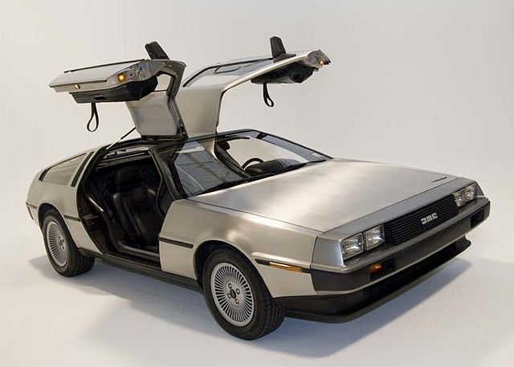
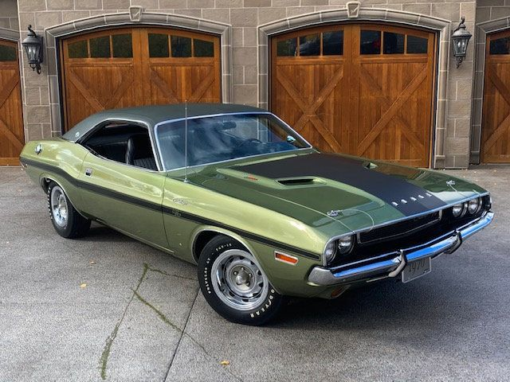
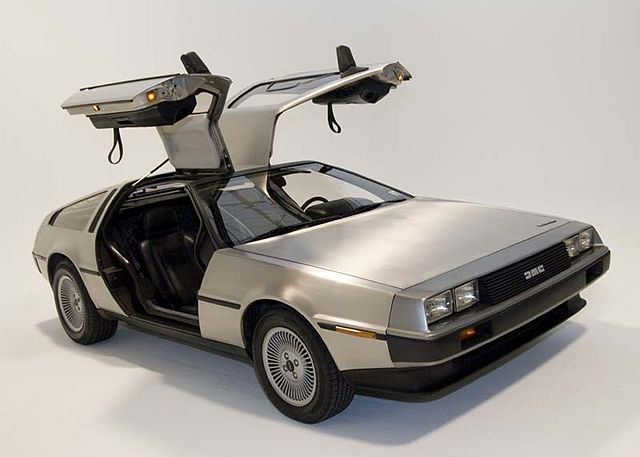
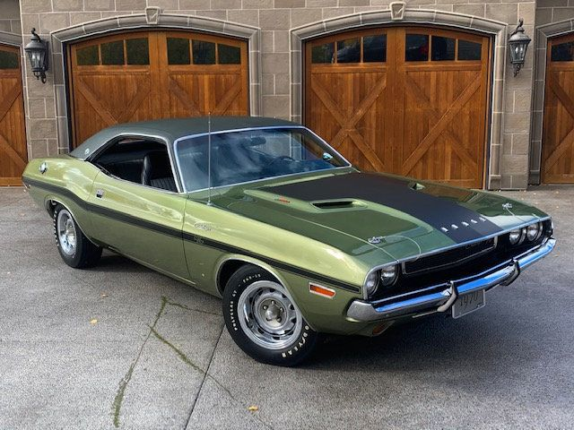

Classic Car Shop si-a deschis pentru prima data usile in anul 1995, cu scopul de a restaura si de a vinde
unele dintre cele mai rare masini clasice. Incepand de la un garaj in anul 1995, ne-am extins afacerea treptat, ajungand ca in prezent sa avem 3
ateliere in unele dintre marile orase din Romania: Bucuresti, Cluj-Napoca si Iasi. Avem echipament de ultima generatie si personal bine pregatit,
ceea ce garanteaza restaurari de calitate.
Daca ai o masina clasica ce trebuie restaurata, ai ajuns in locul potrivit!
Copyright © 2022 Classic Cars Shop. Website developed by Lefter Andrei (Proiect tehnici web)


 
